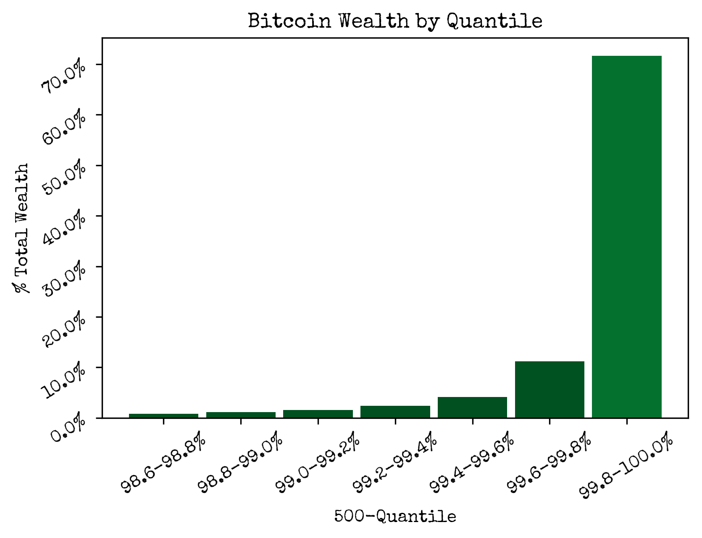
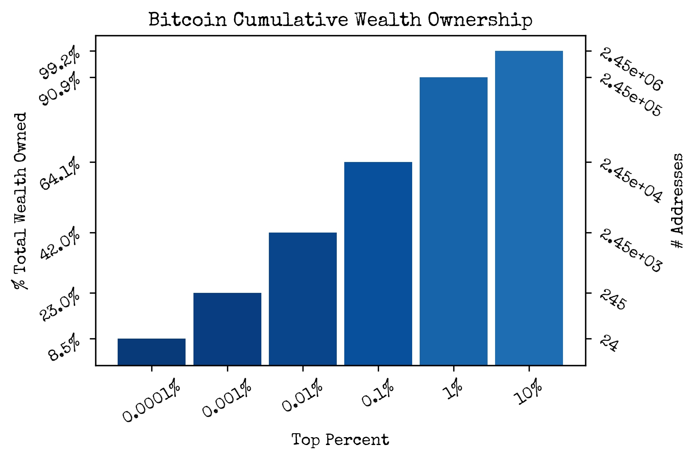
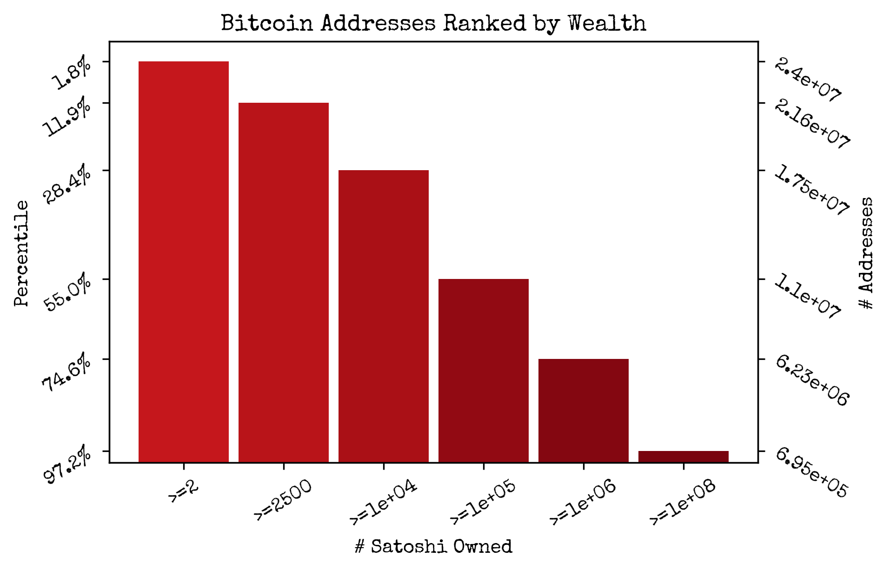
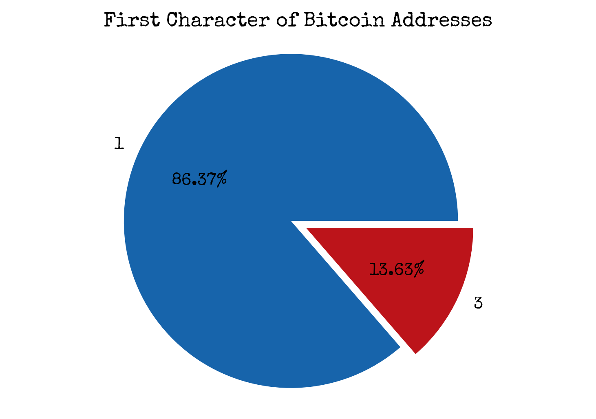

Visualizing Bitcoin Wealth Distribution
Wed, 27 Dec 2017
Bitcoin, Cryptocurrency, Data Science, Data Visualization, Statistics
This post explores the distribution of wealth among nonempty addresses on the Bitcoin network.
All addresses on the Bitcoin network are queried. The number of addresses with at least one satoshi is 24,473,765 at the time of the query. The resulting addresses are sorted by the amount of Bitcoin they contain. The list is divided into quantiles and the wealth of each quantile is plotted in a bar plot.

Next, the wealth of the top \(n\) percent is computed for several values of \(n\). The result is shown in a bar plot, along with the number of addresses in each group.

Then, the number of addresses with at least \(m\) satoshi is computed for several values of \(m\). The result is shown in a bar plot along with the corresponding percentiles.

Finally, the addresses are grouped by their first character and the result is displayed in a pie chart.

As can be seen, there is a large imbalance of wealth among Bitcoin addresses. However, the true balance of wealth is obscured by the fact that a single wallet can generate multiple addresses.
{kind=link}
{kind=link}
{kind=link}
{kind=link}